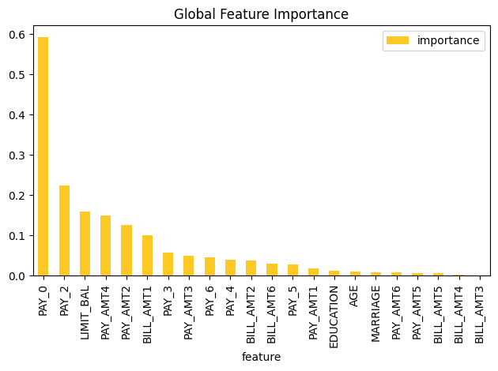

Original Feature Importance Explainer (Kernel SHAP) Demo
This example demonstrates how to interpret a Driverless AI MOJO model using the H2O Sonar library and retrieve the data and plot with original features importances.
[1]:
import os
import logging
import datatable
import daimojo
import webbrowser
from h2o_sonar import interpret
from h2o_sonar.lib.api import commons
from h2o_sonar.lib.api import explainers
from h2o_sonar.explainers import fi_kernel_shap_explainer as explainer
from h2o_sonar.lib.api.models import ModelApi
[2]:
# explainer description
interpret.describe_explainer(explainer.KernelShapFeatureImportanceExplainer)
[2]:
{'id': 'h2o_sonar.explainers.fi_kernel_shap_explainer.KernelShapFeatureImportanceExplainer',
'name': 'KernelShapFeatureImportanceExplainer',
'display_name': 'Shapley Values for Original Features (Kernel SHAP Method)',
'tagline': 'KernelShapFeatureImportanceExplainer.',
'description': 'Shapley explanations are a technique with credible theoretical support that presents consistent global and local variable contributions. Local numeric Shapley values are calculated by tracing single rows of data through a trained tree ensemble and aggregating the contribution of each input variable as the row of data moves through the trained ensemble. For regression tasks, Shapley values sum to the prediction of the Driverless AI model. For classification problems, Shapley values sum to the prediction of the Driverless AI model before applying the link function. Global Shapley values are the average of the absolute Shapley values over every row of a dataset. Shapley values for original features are calculated with the Kernel Explainer method, which uses a special weighted linear regression to compute the importance of each feature. More information about Kernel SHAP is available at http://papers.nips.cc/paper/7062-a-unified-approach-to-interpreting-model-predictions.pdf.',
'brief_description': 'KernelShapFeatureImportanceExplainer.',
'model_types': ['iid'],
'can_explain': ['regression', 'binomial', 'multinomial'],
'explanation_scopes': ['global_scope', 'local_scope'],
'explanations': [{'explanation_type': 'global-feature-importance',
'name': 'GlobalFeatImpExplanation',
'category': '',
'scope': 'global',
'has_local': '',
'formats': []},
{'explanation_type': 'local-feature-importance',
'name': 'LocalFeatImpExplanation',
'category': '',
'scope': 'local',
'has_local': '',
'formats': []}],
'keywords': ['explains-original-feature-importance', 'is_slow', 'h2o-sonar'],
'parameters': [{'name': 'sample_size',
'description': 'Sample size.',
'comment': '',
'type': 'int',
'val': 100000,
'predefined': [],
'tags': [],
'min_': 0.0,
'max_': 0.0,
'category': ''},
{'name': 'sample',
'description': 'Sample Kernel Shapley.',
'comment': '',
'type': 'bool',
'val': True,
'predefined': [],
'tags': [],
'min_': 0.0,
'max_': 0.0,
'category': ''},
{'name': 'nsample',
'description': "Number of times to re-evaluate the model when explaining each prediction with Kernel Explainer. Default is determined internally.'auto' or int. Number of times to re-evaluate the model when explaining each prediction. More samples lead to lower variance estimates of the SHAP values. The 'auto' setting uses nsamples = 2 * X.shape[1] + 2048. This setting is disabled by default and runtime determines the right number internally.",
'comment': '',
'type': 'int',
'val': '',
'predefined': [],
'tags': [],
'min_': 0.0,
'max_': 0.0,
'category': ''},
{'name': 'L1',
'description': "L1 regularization for Kernel Explainer. 'num_features(int)', 'auto' (default for now, but deprecated), 'aic', 'bic', or float. The L1 regularization to use for feature selection (the estimation procedure is based on a debiased lasso). The 'auto' option currently uses aic when less that 20% of the possible sample space is enumerated, otherwise it uses no regularization. The aic and bic options use the AIC and BIC rules for regularization. Using 'num_features(int)' selects a fix number of top features. Passing a float directly sets the alpha parameter of the sklearn.linear_model.Lasso model used for feature selection.",
'comment': '',
'type': 'str',
'val': 'auto',
'predefined': [],
'tags': [],
'min_': 0.0,
'max_': 0.0,
'category': ''},
{'name': 'max runtime',
'description': 'Max runtime for Kernel explainer in seconds.',
'comment': '',
'type': 'int',
'val': 900,
'predefined': [],
'tags': [],
'min_': 0.0,
'max_': 0.0,
'category': ''},
{'name': 'fast_approx',
'description': 'Speed up predictions with fast predictions approximation.',
'comment': '',
'type': 'bool',
'val': True,
'predefined': [],
'tags': [],
'min_': 0.0,
'max_': 0.0,
'category': ''},
{'name': 'leakage_warning_threshold',
'description': 'The threshold above which to report a potentially detected feature importance leak problem.',
'comment': '',
'type': 'float',
'val': 0.95,
'predefined': [],
'tags': [],
'min_': 0.0,
'max_': 0.0,
'category': ''}],
'metrics_meta': []}
Interpretation
[3]:
# dataset
dataset_path = "../../data/predictive/creditcard.csv"
target_col = "default payment next month"
# model
mojo_path = "../../data/predictive/models/creditcard-binomial.mojo"
mojo_model = daimojo.model(mojo_path)
model = ModelApi().create_model(
model_src=mojo_model,
target_col=target_col,
used_features=list(mojo_model.feature_names),
)
# results
results_location = "./results"
os.makedirs(results_location, exist_ok=True)
[4]:
interpretation = interpret.run_interpretation(
dataset=dataset_path,
model=model,
target_col=target_col,
results_location=results_location,
explainers=[explainer.KernelShapFeatureImportanceExplainer.explainer_id()],
log_level=logging.INFO,
)
As of langchain-core 0.3.0, LangChain uses pydantic v2 internally. The langchain_core.pydantic_v1 module was a compatibility shim for pydantic v1, and should no longer be used. Please update the code to import from Pydantic directly.
For example, replace imports like: `from langchain_core.pydantic_v1 import BaseModel`
with: `from pydantic import BaseModel`
or the v1 compatibility namespace if you are working in a code base that has not been fully upgraded to pydantic 2 yet. from pydantic.v1 import BaseModel
As of langchain-core 0.3.0, LangChain uses pydantic v2 internally. The langchain.pydantic_v1 module was a compatibility shim for pydantic v1, and should no longer be used. Please update the code to import from Pydantic directly.
For example, replace imports like: `from langchain.pydantic_v1 import BaseModel`
with: `from pydantic import BaseModel`
or the v1 compatibility namespace if you are working in a code base that has not been fully upgraded to pydantic 2 yet. from pydantic.v1 import BaseModel
Explainer Result
[5]:
# retrieve the result
result = interpretation.get_explainer_result(
explainer.KernelShapFeatureImportanceExplainer.explainer_id()
)
[6]:
# open interpretation HTML report in web browser
webbrowser.open(interpretation.result.get_html_report_location())
[6]:
True
[7]:
# summary
result.summary()
[7]:
{'id': 'h2o_sonar.explainers.fi_kernel_shap_explainer.KernelShapFeatureImportanceExplainer',
'name': 'KernelShapFeatureImportanceExplainer',
'display_name': 'Shapley Values for Original Features (Kernel SHAP Method)',
'tagline': 'KernelShapFeatureImportanceExplainer.',
'description': 'Shapley explanations are a technique with credible theoretical support that presents consistent global and local variable contributions. Local numeric Shapley values are calculated by tracing single rows of data through a trained tree ensemble and aggregating the contribution of each input variable as the row of data moves through the trained ensemble. For regression tasks, Shapley values sum to the prediction of the Driverless AI model. For classification problems, Shapley values sum to the prediction of the Driverless AI model before applying the link function. Global Shapley values are the average of the absolute Shapley values over every row of a dataset. Shapley values for original features are calculated with the Kernel Explainer method, which uses a special weighted linear regression to compute the importance of each feature. More information about Kernel SHAP is available at http://papers.nips.cc/paper/7062-a-unified-approach-to-interpreting-model-predictions.pdf.',
'brief_description': 'KernelShapFeatureImportanceExplainer.',
'model_types': ['iid'],
'can_explain': ['regression', 'binomial', 'multinomial'],
'explanation_scopes': ['global_scope', 'local_scope'],
'explanations': [{'explanation_type': 'global-feature-importance',
'name': 'Shapley on Original Features (Kernel SHAP Method)',
'category': 'DAI MODEL',
'scope': 'global',
'has_local': 'local-feature-importance',
'formats': ['application/vnd.h2oai.json+datatable.jay',
'application/vnd.h2oai.json+csv',
'application/json']},
{'explanation_type': 'local-feature-importance',
'name': 'Shapley on Original Features (Kernel SHAP Method)',
'category': 'CUSTOM',
'scope': 'local',
'has_local': None,
'formats': ['application/vnd.h2oai.json+datatable.jay']},
{'explanation_type': 'global-html-fragment',
'name': 'Shapley on Original Features (Kernel SHAP Method)',
'category': 'MODEL',
'scope': 'global',
'has_local': None,
'formats': ['text/html']}],
'keywords': ['explains-original-feature-importance', 'is_slow', 'h2o-sonar'],
'parameters': [{'name': 'sample_size',
'description': 'Sample size.',
'comment': '',
'type': 'int',
'val': 100000,
'predefined': [],
'tags': [],
'min_': 0.0,
'max_': 0.0,
'category': ''},
{'name': 'sample',
'description': 'Sample Kernel Shapley.',
'comment': '',
'type': 'bool',
'val': True,
'predefined': [],
'tags': [],
'min_': 0.0,
'max_': 0.0,
'category': ''},
{'name': 'nsample',
'description': "Number of times to re-evaluate the model when explaining each prediction with Kernel Explainer. Default is determined internally.'auto' or int. Number of times to re-evaluate the model when explaining each prediction. More samples lead to lower variance estimates of the SHAP values. The 'auto' setting uses nsamples = 2 * X.shape[1] + 2048. This setting is disabled by default and runtime determines the right number internally.",
'comment': '',
'type': 'int',
'val': '',
'predefined': [],
'tags': [],
'min_': 0.0,
'max_': 0.0,
'category': ''},
{'name': 'L1',
'description': "L1 regularization for Kernel Explainer. 'num_features(int)', 'auto' (default for now, but deprecated), 'aic', 'bic', or float. The L1 regularization to use for feature selection (the estimation procedure is based on a debiased lasso). The 'auto' option currently uses aic when less that 20% of the possible sample space is enumerated, otherwise it uses no regularization. The aic and bic options use the AIC and BIC rules for regularization. Using 'num_features(int)' selects a fix number of top features. Passing a float directly sets the alpha parameter of the sklearn.linear_model.Lasso model used for feature selection.",
'comment': '',
'type': 'str',
'val': 'auto',
'predefined': [],
'tags': [],
'min_': 0.0,
'max_': 0.0,
'category': ''},
{'name': 'max runtime',
'description': 'Max runtime for Kernel explainer in seconds.',
'comment': '',
'type': 'int',
'val': 900,
'predefined': [],
'tags': [],
'min_': 0.0,
'max_': 0.0,
'category': ''},
{'name': 'fast_approx',
'description': 'Speed up predictions with fast predictions approximation.',
'comment': '',
'type': 'bool',
'val': True,
'predefined': [],
'tags': [],
'min_': 0.0,
'max_': 0.0,
'category': ''},
{'name': 'leakage_warning_threshold',
'description': 'The threshold above which to report a potentially detected feature importance leak problem.',
'comment': '',
'type': 'float',
'val': 0.95,
'predefined': [],
'tags': [],
'min_': 0.0,
'max_': 0.0,
'category': ''}],
'metrics_meta': []}
[8]:
# parameter
result.params()
[8]:
{'sample_size': 100000,
'sample': True,
'nsample': '',
'L1': 'auto',
'max runtime': 900,
'fast_approx': True,
'leakage_warning_threshold': 0.95}
Display Data
[9]:
result.data()
[9]:
| feature | importance | |
|---|---|---|
| ▪▪▪▪ | ▪▪▪▪▪▪▪▪ | |
| 0 | PAY_0 | 0.592187 |
| 1 | PAY_2 | 0.224423 |
| 2 | LIMIT_BAL | 0.159352 |
| 3 | PAY_AMT4 | 0.14868 |
| 4 | PAY_AMT2 | 0.125437 |
| 5 | BILL_AMT1 | 0.101179 |
| 6 | PAY_3 | 0.0576715 |
| 7 | PAY_AMT3 | 0.0495318 |
| 8 | PAY_6 | 0.0453093 |
| 9 | PAY_4 | 0.0391064 |
| 10 | BILL_AMT2 | 0.0371473 |
| 11 | BILL_AMT6 | 0.0298867 |
| 12 | PAY_5 | 0.0270603 |
| 13 | PAY_AMT1 | 0.01873 |
| 14 | EDUCATION | 0.0131732 |
| 15 | AGE | 0.0110948 |
| 16 | MARRIAGE | 0.00884818 |
| 17 | PAY_AMT6 | 0.00759522 |
| 18 | PAY_AMT5 | 0.00719935 |
| 19 | BILL_AMT5 | 0.00589392 |
| 20 | BILL_AMT4 | 0.00189465 |
| 21 | BILL_AMT3 | 0.00108067 |
Plot Feature Importance Data
[10]:
result.plot()

Save Explainer Log and Data
[11]:
# save the explainer log
log_file_path = "./feature-importance-demo.log"
result.log(path=log_file_path)
[12]:
!cat $log_file_path
[13]:
# save the explainer data
result.zip(file_path="./feature-importance-demo-archive.zip")
[14]:
!unzip -l feature-importance-demo-archive.zip
Archive: feature-importance-demo-archive.zip
Length Date Time Name
--------- ---------- ----- ----
6244 2026-01-29 16:11 explainer_h2o_sonar_explainers_fi_kernel_shap_explainer_KernelShapFeatureImportanceExplainer_df5636ac-4f7b-49cd-aa40-3c9de6b4f434/result_descriptor.json
2 2026-01-29 16:11 explainer_h2o_sonar_explainers_fi_kernel_shap_explainer_KernelShapFeatureImportanceExplainer_df5636ac-4f7b-49cd-aa40-3c9de6b4f434/problems/problems_and_actions.json
110 2026-01-29 16:11 explainer_h2o_sonar_explainers_fi_kernel_shap_explainer_KernelShapFeatureImportanceExplainer_df5636ac-4f7b-49cd-aa40-3c9de6b4f434/global_html_fragment/text_html.meta
4555 2026-01-29 16:11 explainer_h2o_sonar_explainers_fi_kernel_shap_explainer_KernelShapFeatureImportanceExplainer_df5636ac-4f7b-49cd-aa40-3c9de6b4f434/global_html_fragment/text_html/explanation.html
25126 2026-01-29 16:11 explainer_h2o_sonar_explainers_fi_kernel_shap_explainer_KernelShapFeatureImportanceExplainer_df5636ac-4f7b-49cd-aa40-3c9de6b4f434/global_html_fragment/text_html/fi-class-0.png
0 2026-01-29 16:11 explainer_h2o_sonar_explainers_fi_kernel_shap_explainer_KernelShapFeatureImportanceExplainer_df5636ac-4f7b-49cd-aa40-3c9de6b4f434/log/explainer_run_df5636ac-4f7b-49cd-aa40-3c9de6b4f434.log
1842208 2026-01-29 16:11 explainer_h2o_sonar_explainers_fi_kernel_shap_explainer_KernelShapFeatureImportanceExplainer_df5636ac-4f7b-49cd-aa40-3c9de6b4f434/work/shapley.orig.feat.bin
2002886 2026-01-29 16:11 explainer_h2o_sonar_explainers_fi_kernel_shap_explainer_KernelShapFeatureImportanceExplainer_df5636ac-4f7b-49cd-aa40-3c9de6b4f434/work/shapley_formatted_orig_feat.zip
4864158 2026-01-29 16:11 explainer_h2o_sonar_explainers_fi_kernel_shap_explainer_KernelShapFeatureImportanceExplainer_df5636ac-4f7b-49cd-aa40-3c9de6b4f434/work/shapley.orig.feat.csv
40216 2026-01-29 16:11 explainer_h2o_sonar_explainers_fi_kernel_shap_explainer_KernelShapFeatureImportanceExplainer_df5636ac-4f7b-49cd-aa40-3c9de6b4f434/work/y_hat.bin
2 2026-01-29 16:11 explainer_h2o_sonar_explainers_fi_kernel_shap_explainer_KernelShapFeatureImportanceExplainer_df5636ac-4f7b-49cd-aa40-3c9de6b4f434/insights/insights_and_actions.json
185 2026-01-29 16:11 explainer_h2o_sonar_explainers_fi_kernel_shap_explainer_KernelShapFeatureImportanceExplainer_df5636ac-4f7b-49cd-aa40-3c9de6b4f434/global_feature_importance/application_vnd_h2oai_json_datatable_jay.meta
143 2026-01-29 16:11 explainer_h2o_sonar_explainers_fi_kernel_shap_explainer_KernelShapFeatureImportanceExplainer_df5636ac-4f7b-49cd-aa40-3c9de6b4f434/global_feature_importance/application_json.meta
163 2026-01-29 16:11 explainer_h2o_sonar_explainers_fi_kernel_shap_explainer_KernelShapFeatureImportanceExplainer_df5636ac-4f7b-49cd-aa40-3c9de6b4f434/global_feature_importance/application_vnd_h2oai_json_csv.meta
1806 2026-01-29 16:11 explainer_h2o_sonar_explainers_fi_kernel_shap_explainer_KernelShapFeatureImportanceExplainer_df5636ac-4f7b-49cd-aa40-3c9de6b4f434/global_feature_importance/application_vnd_h2oai_json_datatable_jay/explanation.json
888 2026-01-29 16:11 explainer_h2o_sonar_explainers_fi_kernel_shap_explainer_KernelShapFeatureImportanceExplainer_df5636ac-4f7b-49cd-aa40-3c9de6b4f434/global_feature_importance/application_vnd_h2oai_json_datatable_jay/feature_importance_class_0.jay
1139 2026-01-29 16:11 explainer_h2o_sonar_explainers_fi_kernel_shap_explainer_KernelShapFeatureImportanceExplainer_df5636ac-4f7b-49cd-aa40-3c9de6b4f434/global_feature_importance/application_json/explanation.json
1618 2026-01-29 16:11 explainer_h2o_sonar_explainers_fi_kernel_shap_explainer_KernelShapFeatureImportanceExplainer_df5636ac-4f7b-49cd-aa40-3c9de6b4f434/global_feature_importance/application_json/feature_importance_class_0.json
1138 2026-01-29 16:11 explainer_h2o_sonar_explainers_fi_kernel_shap_explainer_KernelShapFeatureImportanceExplainer_df5636ac-4f7b-49cd-aa40-3c9de6b4f434/global_feature_importance/application_vnd_h2oai_json_csv/explanation.json
748 2026-01-29 16:11 explainer_h2o_sonar_explainers_fi_kernel_shap_explainer_KernelShapFeatureImportanceExplainer_df5636ac-4f7b-49cd-aa40-3c9de6b4f434/global_feature_importance/application_vnd_h2oai_json_csv/feature_importance_class_0.csv
201 2026-01-29 16:11 explainer_h2o_sonar_explainers_fi_kernel_shap_explainer_KernelShapFeatureImportanceExplainer_df5636ac-4f7b-49cd-aa40-3c9de6b4f434/local_feature_importance/application_vnd_h2oai_json_datatable_jay.meta
847 2026-01-29 16:11 explainer_h2o_sonar_explainers_fi_kernel_shap_explainer_KernelShapFeatureImportanceExplainer_df5636ac-4f7b-49cd-aa40-3c9de6b4f434/local_feature_importance/application_vnd_h2oai_json_datatable_jay/explanation.json
40216 2026-01-29 16:11 explainer_h2o_sonar_explainers_fi_kernel_shap_explainer_KernelShapFeatureImportanceExplainer_df5636ac-4f7b-49cd-aa40-3c9de6b4f434/local_feature_importance/application_vnd_h2oai_json_datatable_jay/y_hat.bin
1842208 2026-01-29 16:11 explainer_h2o_sonar_explainers_fi_kernel_shap_explainer_KernelShapFeatureImportanceExplainer_df5636ac-4f7b-49cd-aa40-3c9de6b4f434/local_feature_importance/application_vnd_h2oai_json_datatable_jay/feature_importance_class_0.jay
--------- -------
10676807 24 files
[ ]: